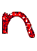
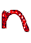

Paintings
Drawings
Photos
UW Daily Illustrations
Life of Pika Illustrations
Dead End Test Renders
Miscellaneous
Tetriven
Nabanagrams
Chord Wheel
Automata
Point & Clicks
Catan-o-Rama!
Cirque de Sabotage
MXBBI
Drop
Griven
Grounded
Soviet Monopoly
Game of Cards
Miscellaneous
Either
Palindromes
Alphabet Sayings
Miscellaneous
College
Christian Bök
You're Little
ABBA CD
TheRaven.java
Nature Forging a Baby
High School
Great Apes
Ough
I Am Dumb Poem
Fruit Flies
By the Waters of Babylon: The Reawakening
Mr. Oates
Middle School
Shakespearean Friday
Ms. Knottethin
The Church
Zirconium
Ode to Oden
Life of Bob
How to Write a How-To Essay
The 'Lewis Carroll Poem' Poem
Mystery Object Poem
Newport Field Trip Haikus
Planet Limericks
Da Vinci Code Poem
Elementary School
The Flagellants
The Adventures of George W. Bush
John Adams Poem
All Videos
Music Videos
Live Action
Animation
Miscellaneous


 
